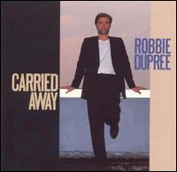

Carried Away
Robbie dupree • Miramar • Jan 1987
Soft rock singer Robbie Dupree was born Robert Dupuis in Brooklyn in 1947, and began his singing career in street-corner doo-wop groups. He later became infatuated with blues and RB, and in 1970 began
performing original songs around Greenwich Village clubs (and even played with future Chic guitarist Nile Rodgers). In 1973, he moved to the town of Woodstock, where he played with a number of local musicians and bands, as well as
working on his songwriting. In 1978, he moved to Los Angeles in search of a record deal, and met up with old friends Peter Bunetta and Rick Chudacoff, who became his production team. Singing a soft style of blue-eyed soul that was
eminently compatible with the adult contemporary radio format, Dupree signed with Elektra and issued his self-titled debut in 1980. Lead single "Steal Away" was a Top Ten smash, and the follow-up "Hot Rod Hearts" also reached the Top
20. Dupree was nominated for a Best New Artist Grammy, but after his 1981 follow-up LP Street Corner Heroes and the accompanying chart single "Brooklyn Girls," he stopped recording for a while, simply waiting out a contract he was
dissatisfied with. Finally, in 1989, Dupree returned on Capitol Records with the album Carried Away. It didn't perform as well as his earlier work, and Dupree eventually wound up signing with the Japanese label Polystar, for
whom he recorded Walking on Water in 1993. Distributed in the U.S. by Miramar, the record did produce a couple of minor adult contemporary hits in the title track and "Goodbye to L.A." Smoke and Mirrors followed in 1995, featuring
keyboardist David Sancious, with whom Dupree later toured as a duo. During the '90s, Dupree also expanded into the production arena, working on records for Artie Traum and longtime collaborator Bill LaBounty, among others. 1997 brought
the limited-edition EP Vintage, and in late 1998 Dupree issued the double-live album All Night Long, which looked back over his entire catalog. 2001 brought another limited-edition EP, appropriately titled Vintage, Vol. 2. - Steve Huey, All Music Guide